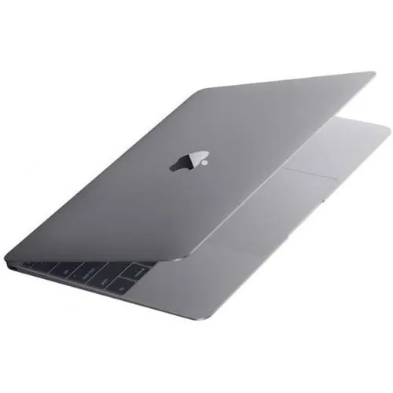
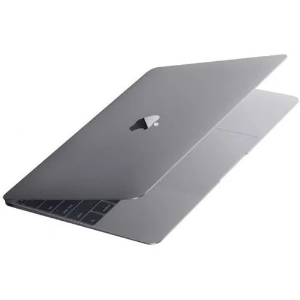

Apple MacBook Pro 2022
(M2, 13.3 inch, 8GB, 256GB, macOS Monterey, Space Grey)


Prodect Price- ₹ 39,999 ₹ 45,000 save 15,000 ₹
Split your bill in 3 for free with interest waived off EMI.
(M2, 13.3 inch, 8GB, 256GB, macOS Monterey, Space Grey)

Prodect Price- ₹ 39,999 ₹ 45,000 save 15,000 ₹
Split your bill in 3 for free with interest waived off EMI.
Use the Apple MacBook Pro 2022 has set standards in computing thanks to its Apple M2 chip Processor.
M2 is the next generation of Apple silicon.
Its 8-core CPU lets you zip through everyday tasks like creating documents and presentations,
or take on more intensive workflows like developing in Xcode or mixing tracks in Logic Pro.
M2 features up to a 10-core GPU, resulting in a big boost in graphics performance.
And its media engine lets you play and edit up to 11 streams of 4K and up to 2 streams of 8K ProRes video.
Considering the amazing specifications, the Apple MacBook Pro 2022’s price is quite fair.
The more unified memory (RAM) you choose, the more apps you can run simultaneously with a higher rate of performance.
The 13-inch MacBook Pro can be configured with up to 24GB for more fluid multitasking and easy handling of large files.
Solid-state drive (SSD) storage is the amount of space your MacBook Pro has for your documents, photos, music, videos, and other files.
It delivers significant performance and speed that you’ll notice when you start up your Mac,
launch an app or browse your photos. Order the Apple MacBook Pro 2022 online, right now!